Marginale Verteilungskurve
Marginal-Distribution-Curve
Zusammenfassung
Diagramme in Origin sind vielseitig anpassbar. Dieses Tutorial zeigt, wie ein marginales Histogramm benutzerdefiniert angezeigt wird, um die Verteilungskurven anstatt von Säulen anzuzeigen.
- 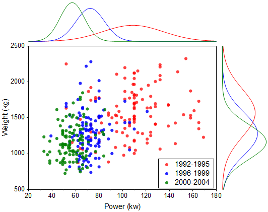
Origin-Version mind. erforderlich: 2015 SR0
Was Sie lernen werden
- Marginales Histogramm erstellen
- Filtersperre verwenden, um Zeichnungen mit unterschiedlichen Filterbedingungen zu erstellen.
- Zeichnungen manuell gruppieren.
Filter blockieren
Origin9.1 beinhaltet eine besondere Funktion, die Ihnen erlaubt, unterschiedliche Datenfilter in einem einzelnen Quellarbeitsblatt einzurichten und beispielsweise Daten für jede Filterbedingung zu zeichnen, ohne die vorhergehende Zeichnung zu beeinträchtigen. Dies ist möglich durch das Kopieren von gefilterten Daten in ein neues Arbeitsblatt und das Positionieren einer "Filtersperre" auf die gefilterten Daten.
- Importieren Sie die Datei <Origin-Verzeichnis>\Samples\Statistics\automobile.dat in eine leere Arbeitsmappe.
- Markieren Sie Spalte col(A), klicken Sie mit der rechten Maustaste und wählen Sie Filter: Filter hinzufügen oder entfernen.
- Klicken Sie auf das Filtersymbol im Spaltenkopf und wählen Sie Zwischen....
- Legen Sie im Dialog Zwischen die Werte für Von und Bis auf 1992 bzw. 1995 und klicken Sie auf OK.
- Markieren Sie die Spalte Col("Power") und Col("Weight"). Klicken Sie mit der rechten Maustaste und wählen Sie Spalten kopieren in.
- Geben Sie im Dialog colcopy 1992~1995!<new> im Textfeld Zielspalten ein, wie unten zu sehen, und klicken Sie auf OK.
- 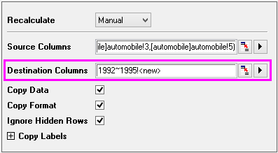
- Klicken Sie im neu erstellten Blatt auf das grüne Schloss im Kopf von Spalte Col(A) und wählen Sie Arbeitsblattfilter: Blockieren.
- 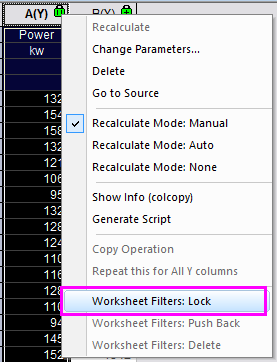
- Gehen Sie zurück zum Blatt "automobile" und wiederholen Sie die Schritte 4 - 7 zweimal mit den Filterbedingungen für Col("Year") 1996~1999 sowie 2000~2004. Sie müssen jedes Mal einen Blattnamen manuell im Dialog colcopy eingeben. Die Filterbedingungen werden mit jedem Blatt blockiert. Sie können Sie mit Hilfe des Kontextmenüs Arbeitsblattfilter: Auf Quellarbeitsblatt verwenden zurücknehmen.
Zeichnung mit marginalen Verteilungskurven erstellen
- Gehen Sie zu Blatt "1992~1995", markieren Sie alle Spalten und wählen Sie Zeichnen: Statistisch: Marginale Histogramme.
- 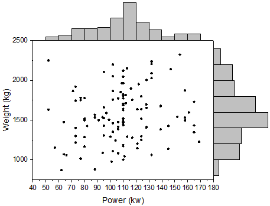
- Klicken Sie doppelt auf einen Balken im obigen Histogramm, um den Dialog Details Zeichnung zu öffnen. Wechseln Sie zur Registerkarte Daten und setzen Sie Verteilungskurve: Typ auf Normal. Dies gilt für Layer 2.
- 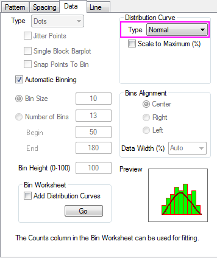
- Wechseln Sie zur Registerkarte Muster und nehmen Sie die unten gezeigten Einstellungen vor, um die Einteilungsbalken zu verbergen.
- 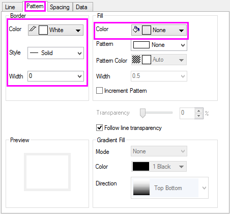
- Wechseln Sie zur Registerkarte Linie und setzen die Farbe auf Schwarz. Klicken Sie auf Anwenden, um die Änderungen zu sehen.
- 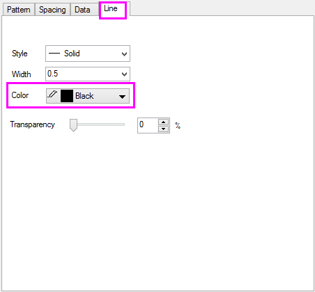
- Wiederholen Sie Schritt 2 bis 4 für Layer 3 (rechtes Histogramm).
- 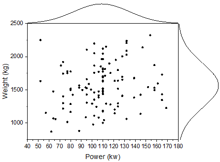
Gruppierte marginale Verteilungskurven zeichnen
- Wählen Sie Grafik: Setup Diagramm im Menü.
 |
Um alle drei Bedienfelder im Dialog Diagrammeinstellungen anzuzeigen, erweitern Sie bitte das Bedienfeld Diagrammtyp, indem Sie auf  klicken, und erweitern Sie das Bedienfeld Verfügbare Daten, indem Sie erneut auf klicken. klicken, und erweitern Sie das Bedienfeld Verfügbare Daten, indem Sie erneut auf klicken.
Bitte lesen Sie unter Mit Hilfe des Dialogs Diagrammeinstellungen zeichnen weitere Informationen zu diesem Thema.
|
- Wählen Sie im linken Bedienfeld Layer1. Legen Sie die Bedienelemente wie unten gezeigt fest und klicken Sie auf Hinzufügen.
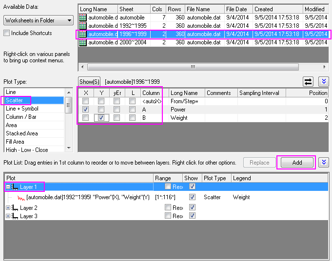
- Fügen Sie das Histogramm "Power" zu Layer2 hinzu.
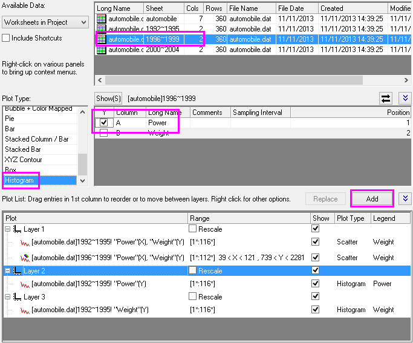
- Fügen Sie das Histogramm "Weight" zu Layer3 hinzu.
- Wiederholen Sie Schritt 2 bis 4, um die Daten 2000~2004 zu jedem Layer hinzuzufügen. Die Diagrammliste sollte folgendermaßen aussehen:
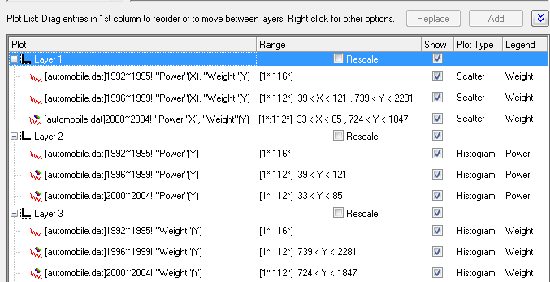
- Klicken Sie auf OK, um den Dialog Details Zeichnung zu schließen und das Diagramm neu zu skalieren.
Zeichnungen gruppieren
- Klicken Sie mit der rechten Maustaste auf das Layersymbol oben links im Diagrammfenster und wählen Sie Layerinhalt.
- Markieren Sie alle drei Zeichnungen und klicken Sie auf Gruppe. Klicken Sie dann auf OK.
- 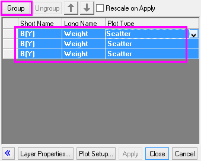
- Wiederholen Sie Schritt 2 für Layer 2 und Layer 3.
- 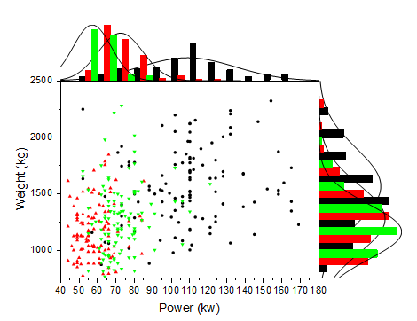
Weitere benutzerdefinierte Anpassungen
- Klicken Sie doppelt auf die untere Achse, um denDialog Achsen für Layer 1 zu öffnen, gehen Sie dann zur Registerkarte Skalierung und legen Sie die Achsenskalierung für Horizontal (X-Achse) und Vertikal (Y-Achse) jeweils folgendermaßen fest:
- 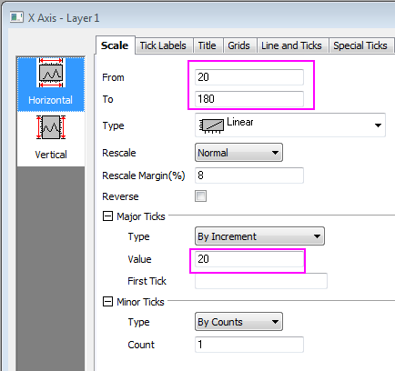
- 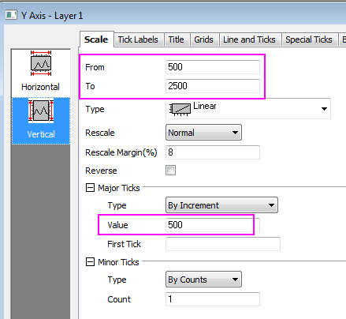
- Bestätigen Sie mit OK, um den Dialog Achsen zu schließen. Klicken Sie doppelt auf das Diagramm, um den Dialog Details Zeichnung zu öffnen, und wählen Sie die erste Datenzeichnung in Layer 1, um zur Registerkarte Gruppe zu gehen. Setzen Sie den Symboltyp auf Kein und duplizieren Sie folgende Einstellungen:
- 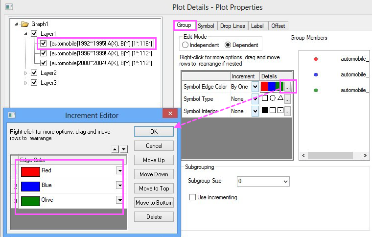
- Klicken Sie auf OK , um den Dialog zu schließen. Wechseln Sie zur Registerkarte Symbole und legen Sie folgende Einstellungen fest.
- 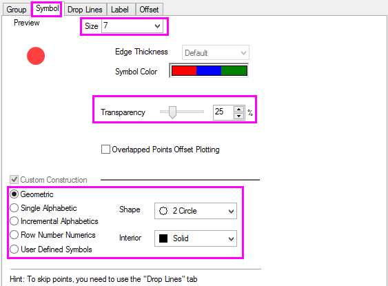
- Gehen Sie zu Layer 2, Registerkarte Daten, und setzen Sie die Einteilungsskalierung auf die gleichen Werte wie die X-Skalierung. Klicken Sie dann auf Anwenden.
- 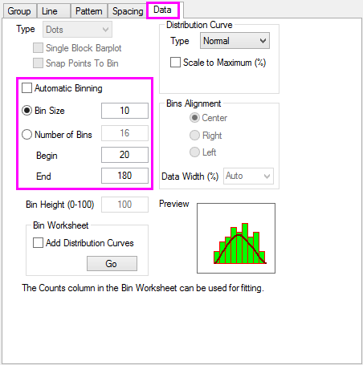
- Gehen Sie für die Zeichnungen in Layer 2 zur Registerkarte Gruppe und setzen Sie den Bearbeitungsmodus auf Unabhängig. so dass Sie die Zeichnungsstile individuell benutzerdefiniert anpassen können. Klicken Sie auf Anwenden.
- 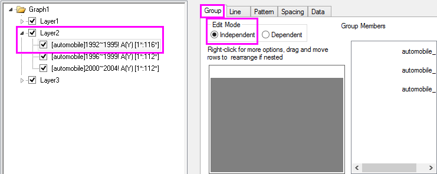
- Klicken Sie auf Registerkarte Muster und blenden Sie die Balken für alle drei Datenzeichnungen in Layer2 aus (wie in Schritte zum Erstellen einer Zeichnung mit marginalen Verteilungskurven, Schritt 3.
- Gehen Sie zur Registerkarte Linie der Datenzeichnung 1992~1995 und legen Sie die Optionen, wie unten gezeigt, fest.
- 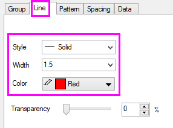
- Wiederholen Sie Schritt 7 für die anderen beiden Zeichnungen in Layer 2 und legen Sie die Symbolfarbe entsprechend Layer 1 fest.
- Wiederholen Sie Schritt 5 - 8 für Layer 3. Klicken Sie auf OK, um den Dialog Details Zeichnung zu schließen und die Einstellungen anzuwenden.
- Aktivieren Sie Layer 1 und wählen Sie Grafik: Legende: Datenzeichnungen im Menü.
- Klicken Sie mit der rechten Maustaste auf die Legende und wählen Sie Einstellungen. Setzen Sie den Hintergrund auf Schwarze Linie und die Größe auf 18. Klicken Sie auf OK.
- Verwenden Sie Format: Seiteneigenschaften, um den Dialog Details Zeichnung - Seite zu öffnen, gehen Sie zur Registerkarte Legenden/Titel und nehmen Sie folgende Einstellungen vor, so dass der Arbeitsblattname als Legendentext verwendet wird:
- 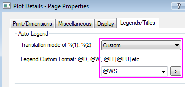
- Ziehen Sie die Legende je nach Bedarf in eine neue Position. Zu diesem Zeitpunkt sollte das Diagramm folgendermaßen aussehen:
- 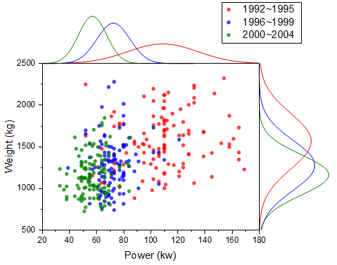
Diagrammlayer neu positionieren
- Klicken Sie doppelt auf die untere Achse, um den Dialog Achsen für Layer 1 zu öffnen, gehen Sie zur Registerkarte Gitternetze, halten Sie die Strg-Taste gedrückt, um die Symbole Vertikal und Horizontal auszuwählen, und nehmen Sie folgende Einstellungen vor:
- 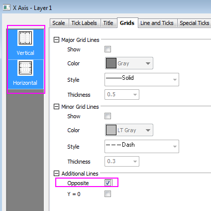
- Klicken Sie auf OK, um den Dialog zu schließen. Öffnen Sie den Dialog Achsen für Layer 2. Gehen Sie zur Registerkarte Linie und Hilfsstriche, stellen Sie sicher, dass das Achsensymbol Unten ausgewählt ist, und deaktivieren Sie das Kontrollkästchen Linie und Hilfsstriche zeigen, um die untere Achsenlinie auszublenden. Tun Sie das Gleiche für die Achsenlinie Links in Layer 3.
- Öffnen Sie den Dialog Layermanagement, markieren Sie Layer 2, gehen Sie zur Registerkarte Größe/Position, aktivieren Sie Verschieben und geben Sie für Oben -35 ein. Klicken Sie auf Übernehmen.
- 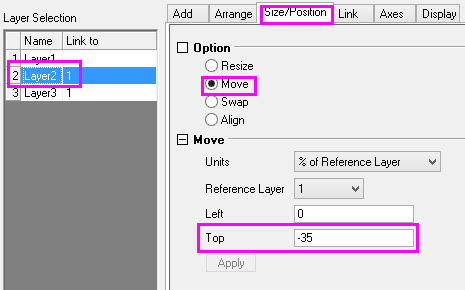
- Legen Sie für Links von Layer 3 den Wert 102 fest. Klicken Sie auf Übernehmen. Klicken Sie auf OK, um den Dialog zu schließen.
- 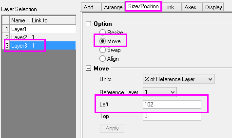